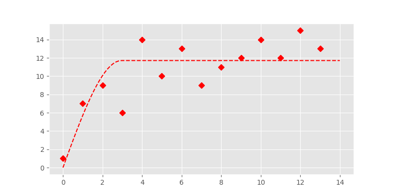
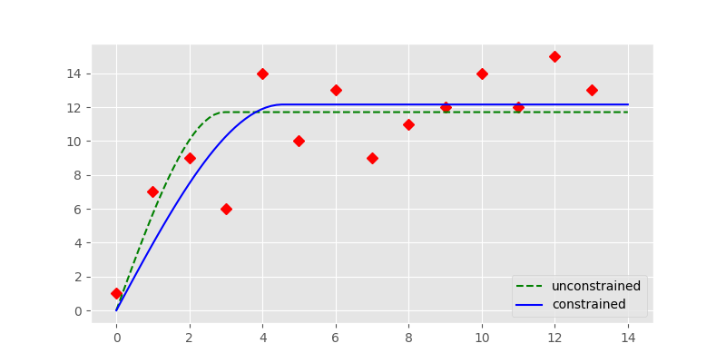
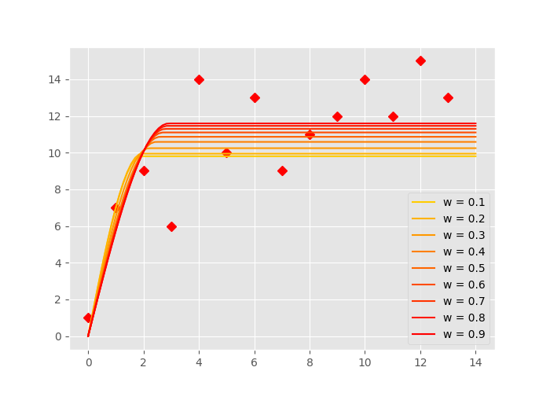
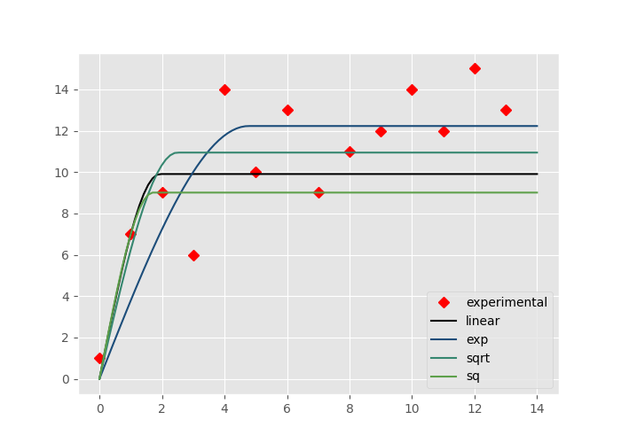

Fitting a theoretical model¶
General¶
The fit function of Variogram relies as of this writing on the
scipy.optimize.curve_fit() function. That function can
be used by ust passing a function and a set of x and y values and hoping for
the best. However, this will not always yield the best parameters. Especially
not for fitting a theoretical variogram function. There are a few assumptions
and simplifications, that we can state in order to utilize the function in a
more meaningful way.
Default fit¶
The example below shows the performance of the fully unconstrained fit, performed by the Levenberg-Marquardt algorithm. In scikit-gstat, this can be used by setting the fit_method parameter to lm. However, this is not recommended.
In [1]: from scipy.optimize import curve_fit
In [2]: import matplotlib.pyplot as plt
In [3]: plt.style.use('ggplot')
In [4]: import numpy as np
In [5]: from skgstat.models import spherical
The fit of a spherical model will be illustrated with some made-up data representing an experimental variogram:
In [6]: y = [1,7,9,6,14,10,13,9,11,12,14,12,15,13]
In [7]: x = list(range(len(y)))
In [8]: xi = np.linspace(0, len(y), 100)
As the spherical function is compiled
using numba, we wrap the function in order to let
curve_fit correctly infer the
parameters.
Then, fitting is a straightforward task.
In [9]: def f(h, a, b):
...: return spherical(h, a, b)
...:
In [10]: cof_u, cov = curve_fit(f, x, y)
In [11]: yi = list(map(lambda x: spherical(x, *cof_u), xi))
In [12]: plt.plot(x, y, 'rD')
Out[12]: [<matplotlib.lines.Line2D at 0x7f486d4ab5c0>]
In [13]: plt.plot(xi, yi, '--r')
Out[13]: [<matplotlib.lines.Line2D at 0x7f486d69e6d8>]
{kind=link}

In fact this looks quite good. But Levenberg-Marquardt is an unconstrained
fitting algorithm and it could likely fail on finding a parameter set. The
fit method can therefore also run a box
constrained fitting algorithm. It is the Trust Region Reflective algorithm,
that will find parameters within a given range (box). It is set by the
fit_method=’tfr’ parameter and also the default setting.
Constrained fit¶
The constrained fitting case was chosen to be the default method in skgstat as the region can easily be specified. Furthermore it is possible to make a good guess on initial values. As we fit actual variogram parameters, namely the effective range, sill, nugget and in case of a stable or Matérn model an additional shape parameter, we know that these parameters cannot be zero. The semi-variance is defined to be always positive. Thus the lower bound of the region will be zero in any case. The upper limit can easily be inferred from the experimental variogram. There are some simple rules, that all theoretical functions follow:
the sill, nugget and their sum cannot be larger than the maximum empirical semi-variance
the range cannot be larger than maxlag, or if maxlag is None the maximum value in the distances
The Variogram class will set the bounds to
exactly these values as default behaviour. As an initial guess, it will use
the mean value of semi-variances for the sill, the mean separating distance
as range and 0 for the nugget.
In the presented empirical variogram, difference between Levenberg-Marquardt
and Trust Region Reflective is illustrated in the example below.
# default plot
In [14]: plt.plot(x, y, 'rD')
Out[14]: [<matplotlib.lines.Line2D at 0x7f486d46e4e0>]
In [15]: plt.plot(xi, yi, '--g', label='unconstrained')
Out[15]: [<matplotlib.lines.Line2D at 0x7f486d46eb70>]
In [16]: cof, cov = curve_fit(f, x, y, p0=[3., 14.], bounds=(0, (np.max(x), np.max(y))))
In [17]: yi = list(map(lambda x: spherical(x, *cof), xi))
In [18]: plt.plot(xi, yi, '-b', label='constrained')
Out[18]: [<matplotlib.lines.Line2D at 0x7f486d491438>]
In [19]: plt.legend(loc='lower right')
Out[19]: <matplotlib.legend.Legend at 0x7f486d46e208>
{kind=link}

The constrained fit, represented by the solid blue line is significantly different from the unconstrained fit (dashed, green line). The fit is overall better as a quick RMSE calculation shows:
In [20]: rmse_u = np.sqrt(np.sum([(spherical(_, *cof_u) - _)**2 for _ in x]))
In [21]: rmse_c = np.sqrt(np.sum([(spherical(_, *cof) - _)**2 for _ in x]))
In [22]: print('RMSE unconstrained: %.2f' % rmse_u)
RMSE unconstrained: 18.65
In [23]: print('RMSE constrained: %.2f' % rmse_c)
RMSE constrained: 17.42
The last note about fitting a theoretical function, is that both methods assume all lag classes to be equally important for the fit. In the specific case of a variogram this is not true.
Distance weighted fit¶
While the standard Levenberg-Marquardt and Trust Region Reflective algorithms
are both based on the idea of least squares, they assume all observations to
be equally important. In the specific case of a theoretical variogram
function, this is not the case.
The variogram describes a dependency of covariance in value on the separation
distances of the observations. This model already implies that the dependency
is stronger on small distances. Considering a kriging interpolation as the
main application of the variogram model, points on close distances will get
higher weights for the interpolated value of an unobserved location. The
weight on large distances will be neglected anyway. Hence, a good fit on
small separating distances is way more important.
The curve_fit function does not have an
option for weighting the squares of specific observations. At least it does
not call it ‘weights’. In terms of scipy, you can define a ‘sigma’, which is
the uncertainty of the respective point.
The uncertainty \(\sigma\) influences the least squares calculation as
described by the equation:
That means, the larger \(\sigma\) is, the less weight it will receive. That also means, we can almost ignore points, by assigning a ridiculous high \(\sigma\) to them. The following example should illustrate the effect. This time, the first 7 points will be weighted by a weight \(\sigma = [0.1, 0.2, \ldots 0.9]\) and the remaining points will receive a \(\sigma = 1\). In the case of \(\sigma=0.1\), this would change the least squares cost function to:
In [24]: cm = plt.get_cmap('autumn_r')
In [25]: sigma = np.ones(len(x))
In [26]: fig, ax = plt.subplots(1, 1, figsize=(7, 5))
In [27]: ax.plot(x, y, 'rD')
Out[27]: [<matplotlib.lines.Line2D at 0x7f486d488550>]
In [28]: for w in np.arange(0.1, 1., 0.1):
....: s = sigma.copy()
....: s[:6] *= w
....: cof, cov = curve_fit(f, x, y, sigma=s)
....: yi = list(map(lambda x: spherical(x, *cof), xi))
....: ax.plot(xi, yi, linestyle='-', color=cm(w + 0.1), label='w = %.1f' % w)
....:
In [29]: ax.legend(loc='lower right')
Out[29]: <matplotlib.legend.Legend at 0x7f486d3a3710>
{kind=link}

In the figure above, you can see how the last points get more and more ignored by the fitting. A smaller w value means more weight on the first 7 points. The more yellow lines have a smaller sill and range.
The Variogram class accepts lists like sigma
from the code example above as
Variogram.fit_sigma property. This way,
the example from above could be implemented.
However, Variogram.fit_sigma can also
apply a function of distance to the lag classes to derive the \(\sigma\)
values. There are several predefined functions.
These are:
sigma=’linear’: The residuals get weighted by the lag distance normalized to the maximum lag distance, denoted as \(w_n\)
sigma=’exp’: The residuals get weighted by the function: \(w = e^{1 / w_n}\)
sigma=’sqrt’: The residuals get weighted by the function: \(w = \sqrt(w_n)\)
sigma=’sq’: The residuals get weighted by the function: \(w = w_n^2\)
The example below illustrates their effect on the sample experimental variograms used so far.
In [30]: cm = plt.get_cmap('gist_earth')
# increase the distance by one, to aviod zeros
In [31]: X = np.asarray([(_ + 1) for _ in x])
In [32]: s1 = X / np.max(X)
In [33]: s2 = np.exp(1. / X)
In [34]: s3 = np.sqrt(s1)
In [35]: s4 = np.power(s1, 2)
In [36]: s = (s1, s2, s3, s4)
In [37]: labels = ('linear', 'exp', 'sqrt', 'sq')
In [38]: plt.plot(x, y, 'rD', label='experimental')
Out[38]: [<matplotlib.lines.Line2D at 0x7f486d36ca58>]
In [39]: for i in range(4):
....: cof, cov = curve_fit(f, x, y, sigma=s[i], p0=(6.,14.), bounds=(0,(14,14)))
....: yi = list(map(lambda x: spherical(x, *cof), xi))
....: plt.plot(xi, yi, linestyle='-', color=cm((i/6)), label=labels[i])
....:
In [40]: plt.legend(loc='lower right')
Out[40]: <matplotlib.legend.Legend at 0x7f486d332ef0>
{kind=link}

That’s it.